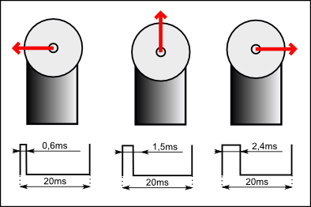

Ovládání servomotoru
Signál pro ovládaní servomotoru je přesně definován jako PWM signál s periodou 20ms a čas trvání jednotkového impulsu určuje natočení serva. Hodnota 1,5ms je středová poloha servomotoru a krajní polohy jsou pak 0,6ms a 2,4ms (může se mírně lišit dle výrobce).
Signál pro ovládaní servomotoru je přesně definován jako PWM signál s periodou 20ms a čas trvání jednotkového impulsu určuje natočení serva. Hodnota 1,5ms je středová poloha servomotoru a krajní polohy jsou pak 0,6ms a 2,4ms (může se mírně lišit dle výrobce).
